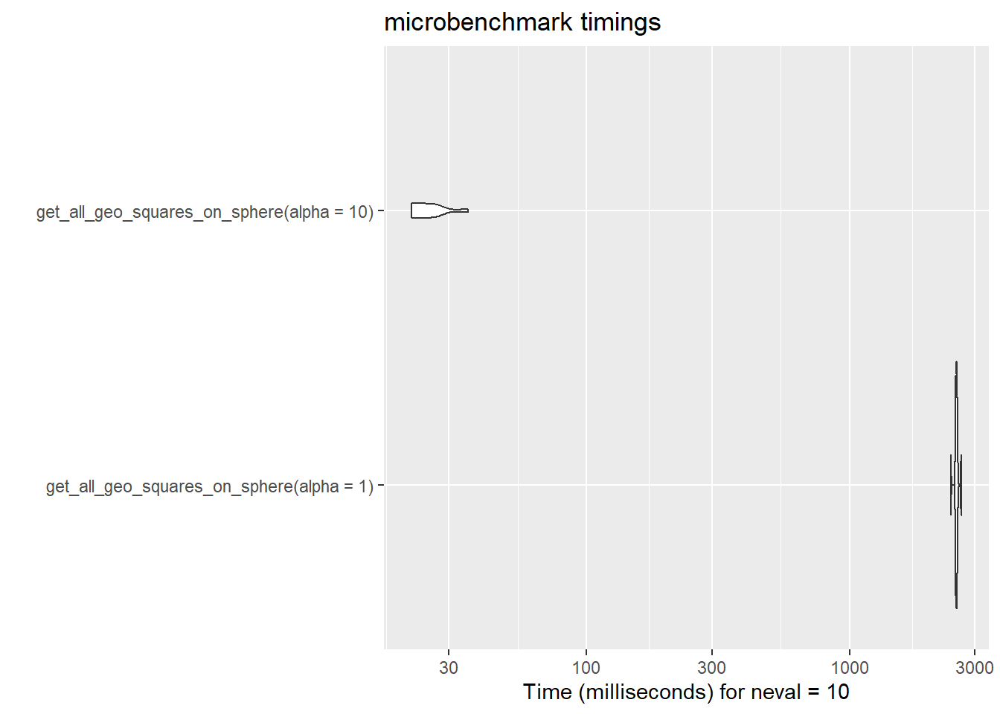

Code
library(ggplot2)
library(sf)
library(s2)
library(microbenchmark)
library(profvis)
library(purrr)library(ggplot2)
library(sf)
library(s2)
library(microbenchmark)
library(profvis)
library(purrr)get_geo_square get a geographic square which sides have \(\alpha\) degrees angle# fonction génératrice de "carré géographique" de `alpha` degrés de côté
# le point de base (lon, lat) est le point inférieur gauche.
get_geo_square <- function(lon, lat, alpha) {
points <- list(
matrix(
c(lon, lat,
lon + alpha, lat,
lon + alpha, lat + alpha,
lon, lat + alpha,
lon, lat),
ncol = 2,
byrow = TRUE
)
)
st_polygon(points)
}get_all_geo_squares_on_sphere cuts the sphere into geographic squares which sides have \(\alpha\) degrees angleLa fonction renvoie un résultat si l’angle \(\alpha\) vérifie la condition :
\[90^\circ\space\bmod\space\alpha = 0\]
get_all_geo_squares_on_sphereget_all_geo_squares_on_sphere <- function(alpha) {
if (90 %% alpha == 0) {
lon <- seq(-180, 180 - alpha, by = alpha)
lat <- seq(-90, 90 - alpha, by = alpha)
geom <- vector("list", length = length(lon) * length(lat))
n <- 0
for (x in lon) {
for (y in lat) {
n <- n + 1
geom[[n]] <- get_geo_square(x, y, alpha)
}
}
geom <- geom |> st_as_sfc(crs = st_crs(4326))
return(geom)
} else {
return(NULL)
}
}microbenchmark(
get_all_geo_squares_on_sphere(alpha = 1),
get_all_geo_squares_on_sphere(alpha = 10),
times = 10L
) |>
ggplot2::autoplot()
geo_squares <- get_all_geo_squares_on_sphere(alpha = 10)
geo_centroids <- geo_squares |>
st_centroid()
ggplot() +
geom_sf(data = geo_squares) +
geom_sf(data = geo_centroids, color = "red", cex = 0.5)
#--------------------------------------------------
geo_squares_moll <- st_transform(
geo_squares,
crs = "+proj=moll"
)
geo_centroids_moll <- st_transform(
geo_centroids,
crs = "+proj=moll"
)
ggplot() +
geom_sf(data = geo_squares_moll) +
geom_sf(data = geo_centroids_moll, color = "red", cex = 0.5)
get_s2_squareget_s2_square <- function(lon, lat, alpha) {
points <- matrix(
c(lon, lat,
lon + alpha, lat,
lon + alpha, lat + alpha,
lon, lat + alpha,
lon, lat),
ncol = 2,
byrow = TRUE
)
s2_make_polygon(points[, 1], points[, 2])
}function get_all_s2_squares_on_sphere
get_all_s2_squares_on_sphere <- function(alpha) {
if (90 %% alpha == 0) {
lon <- seq(-180, 180 - alpha, by = alpha)
lat <- seq(-90, 90 - alpha, by = alpha)
geom <- vector(mode = "list", length = length(lon) * length(lat))
n <- 0
for (x in lon) {
for (y in lat) {
n <- n + 1
geom[[n]] <- get_s2_square(x, y, alpha)
}
}
geom <- geom |>
map(st_as_sfc) |>
unlist(recursive = FALSE) |>
st_as_sfc(crs = st_crs(4326))
return(geom)
} else {
return(NULL)
}
}microbenchmark(
get_all_s2_squares_on_sphere(alpha = 30),
get_all_s2_squares_on_sphere(alpha = 10),
times = 100
) |>
ggplot2::autoplot()
get_all_s2_squares_on_sphereprofvis::profvis({
get_all_s2_squares_on_sphere(alpha = 10)
}
)s2_squares <- get_all_s2_squares_on_sphere(alpha = 10)
s2_centroids <- s2_squares |>
st_centroid()
ggplot(data = s2_squares) +
geom_sf() +
geom_sf(data = s2_centroids, color = "red", cex = 0.5)
#--------------------------------------------------
s2_squares_moll <- st_transform(
s2_squares,
crs = "+proj=moll"
)
s2_centroids_moll <- st_transform(
s2_centroids,
crs = "+proj=moll"
)
ggplot() +
geom_sf(data = s2_squares_moll) +
geom_sf(data = s2_centroids_moll, color = "red", cex = 0.5)